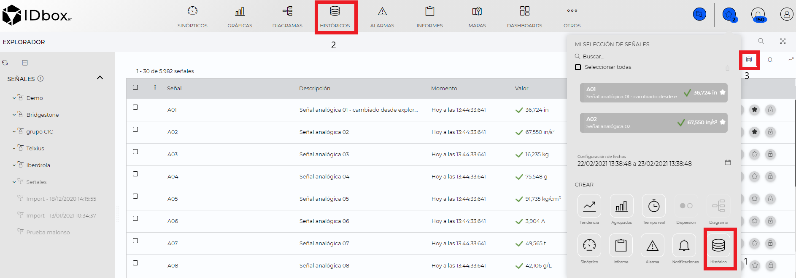
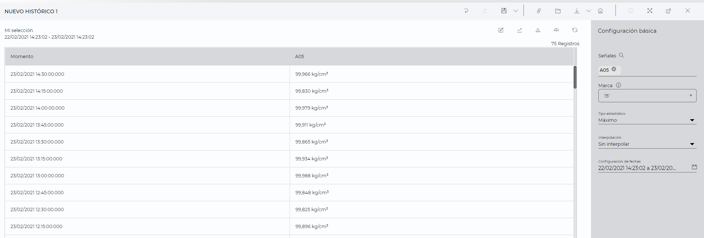

HISTÓRICOS
1. Introducción
Desde el documento de históricos podremos visualizar el listado de los datos históricos de una o varias señales, pudiendo seleccionar el intervalo de tiempo a mostrar, así como la resolución de los datos.
Los documentos de históricos se pueden crear desde desde el lanzador (1), desde el shortcut (2) o desde los accesos directos.

1) Para crear un documento de históricos desde el lanzador se necesita tener señales en “Mi selección de señales”, seleccionar las señales que desea analizar hacer clic en “Históricos”.
En la sección de señales del explorador, pulsando el botón , dicha señal se añadirá a “Mi selección de señales”.
2) Al pulsar en el acceso directo de históricos se abrirá el asistente de creación de un nuevo documento, en el cual tendremos que realizar las siguientes acciones:
- Señales: Hay que seleccionar una señal como mínimo y como máximo se usará el valor configurado en el fichero de configuración.
- Fechas: Permite seleccionar la configuración de fechas del documento.
Establecida la configuración inicial, se mostrará el listado de históricos en la pantalla.
3) Desde la sección de accesos directos, al pulsar el botón “Históricos” se abrirá un nuevo documento de históricos con las señales seleccionadas y con un periodo de una día.
Una vez creado el documento de históricos, en la parte central se mostrarán los datos históricos y en el panel derecho la configuración relativa a los datos a visualizar.

2 Visualización de históricos
En la parte central podremos observar un listado de los datos históricos de los puntos seleccionados y con la configuración establecida.
Se podrán realizar las siguientes acciones rápidas:
1) Editar la muestra en bruto : Habilita la edición de dato en bruto, haciendo clic en el valor a cambiar se habilitará la edición de la celda para que introduzcamos un nuevo valor.
2) Tendencia : Permite crear una gráfica de tendencia con las señales y rango de fechas que tenemos establecido en el documento.
3) Alarmas : Permite crear un documento de alarmas con las señales y rango de fechas que tenemos establecido en el documento.
4) Estadístico : Cambia la vista a la visualización de las estadísticas.
5) Recargar : Recarga los datos a visualizar.
6) Permalink : Permite generar un enlace para acceder directamente al documento.
Las acciones “Editar dato en bruto”, “Estadístico” y “Alarmas” no están disponibles para funciones.

En la tabla de datos se muestran los siguientes campos:
- Momento: Momento en el que se ha generado el dato.
- Señales: Visualizaremos tantas columnas como señales hayamos añadido al documento, en dicha columna se mostrará el dato junto con el icono del estado asociado más prioritario, si posicionamos el cursor sobre el icono aparecerá un tooltip indicando los alias de los estados asociados.
3 Configuración
A través del panel lateral derecho podremos modificar la configuración del documento, así como los datos a visualizar.
La configuración que podemos modificar es la siguiente:
- Señales: Permite añadir o eliminar señales al documento.
- Marca: Permite seleccionar la frecuencia para la que se visualizarán los datos. Si la resolución es mayor que “Max” serán datos estadísticos, en caso contrario serán datos brutos. La opción Auto permite que la marca se ajuste de forma dinámica según el periodo de tiempo seleccionado. Se podrán escribir marcas superiores a la última marca mostrada, si la marca escrita son horas se ajustará a un divisor de 24 horas. Ejemplo: Si se introducen 7 horas, se cambiará automaticamente a 8 horas. Si se introducen 10 horas, se cambiará automaticamente a 12 horas.
- Configuración de fechas: Permite seleccionar el intervalo temporal para el que se mostrarán los datos. Se podrán escribir las fechas en el campo de texto o pulsar sobre el calendario para que se abra el selector de fechas.
En caso de que la marca introducida sea mayor que máxima aparecerán nuevos parámetros de configuración, referentes a interpolación y tipo estadístico:
-
Tipo estadístico: Permite seleccionar el tipo estadístico. Las opciones dependerán del tipo de señal seleccionada:
- Señales analógicas: Media, máximo, mínimo, varianza, desviación típica, cuenta, acumulado, máximo y mínimo y desviación típica respecto a la media.
- Señales digitales: Cuenta, moda, cuenta de valores booleanos true y cuenta de valores false.
- Señales discretas: Cuenta y moda.
- Funciones: La selección de tipos estádisticos no está disponible para funciones.
-
Interpolación: Permite seleccionar la interpolación que se aplicará. Podrá ser Sin interpolar, Lineal, Paso antes y Paso después.

4 Importación de datos
A la hora de gestionar el histórico de las señales, además de la edición del dato en bruto o de las diferentes técnicas de adquisición de datos disponibles, es posible realizar también una importación mediante hoja de cálculo desde el correspondiente apartado del Panel de control que se muestra a continuación.

Una vez se ha accedido, en su interior se encuentran disponibles las diferentes secciones que permiten la gestión de la importación tal y como se visualiza en la siguiente imagen y se describe seguidamente.

-
Plantilla: Se trata de una hoja de cálculo que define la estructura sobre la que incluir los datos que se desean importar al sistema. La descarga comenzará al hacer clic sobre el botón que se visualiza en la parte superior. Es importante tener en cuenta los siguientes aspectos:
- Las señales involucradas deben estar asociadas a un agente de grabación de datos.
- Se debe detallar la zona horaria con el formato correcto. Ejemplo: “UTC+2 Romance Standard Time”.
-
Selección documento: Una vez completada la plantilla con los datos deseados, puede seleccionarse en el siguiente paso para comenzar con el proceso de importación haciendo clic sobre el botón situado próximamente. Si la operación se completa correctamente, los datos quedarán registrados y accesibles desde el sistema; en caso contrario, será necesario revisar el documento de plantilla antes de repetir el proceso.